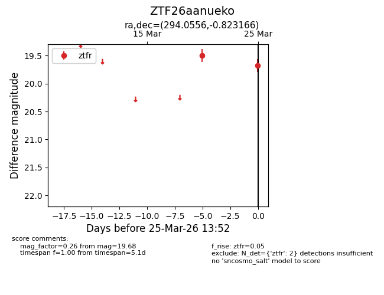
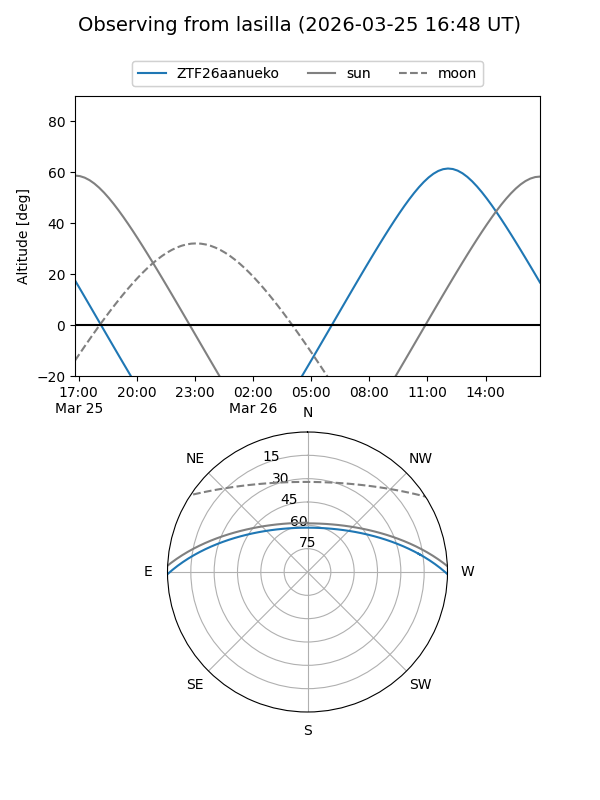
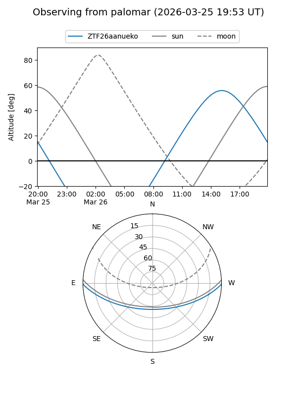

ZTF26aanueko
Target ZTF26aanueko at 2026-03-25 13:55
Aliases and brokers:
FINK: link
Lasair: link
ALeRCE: link
alt names
ZTF26aanueko (ztf,fink_ztf)
Coordinates:
equatorial (ra, dec) = 294.0556,-0.82317
equatorial (HMS+DMS) = 19:36:13.35,-00:49:23.40
galactic (l, b) = (37.3475,-10.33134)
Flags:
Photometry:
last ztfr=19.68
2 ztfr detections
Lightcurve

Visibility


Additional plots